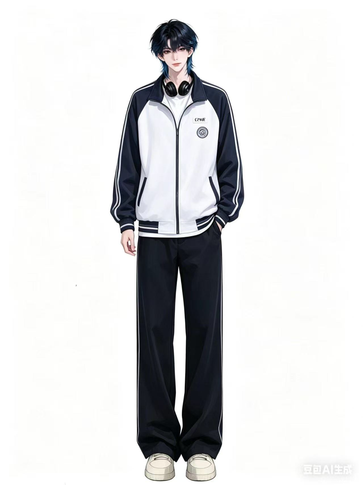

“安静少年感,喜欢听歌和分享故事。”
岁安是厅里最有少年感的人。 第一次听到他的声音时， 很多人都会觉得特别干净。 那种温柔又安静的感觉， 会让人不自觉地放松下来。 他平时很喜欢听歌， 也喜欢和大家分享自己收藏的音乐。 很多深夜里， 大家都会安静地待在频道里听他说话。 有时候只是随便聊聊天， 都会觉得时间过得特别快。 岁安其实是一个很细腻的人。 虽然平时说话不算很多， 但总能注意到别人的情绪变化。 只要有人不开心， 他都会轻轻问一句怎么了。 很多人喜欢和岁安聊天， 是因为他身上总有一种很舒服的氛围。 没有压迫感， 也不会故意制造距离。 和他待在一起的时候， 会觉得特别轻松。 他有时候会在深夜分享自己的故事。 关于成长、关于遗憾、关于青春。 虽然语气总是很平静， 但却很容易让人共鸣。 在大家眼里， 岁安像是青春电影里的男主角。 安静、温柔，又带着一点孤独感。 很多人在最难熬的时候， 都会因为他的陪伴而慢慢好起来。 也正因为如此， 岁安一直都是心事清零里最特别的存在之一。